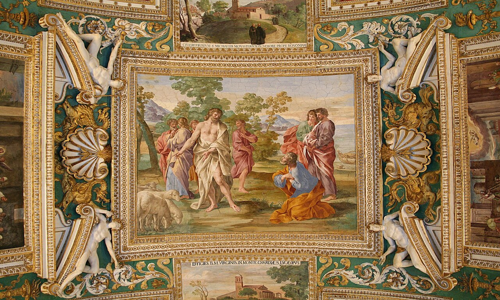

Most PopularSkip-the-line Vatican Museums Entry Ticket
(Vatican Museums & Sistine Chapel Priority Access)
From
€
33
/ person
Best Price
✓ Skip the main ticket queue with timed slot
✓ Full access to Sistine Chapel & Raphael Rooms
✓ Explore all 54 papal gallery rooms at your pace
✓ Optional digital audio guide download